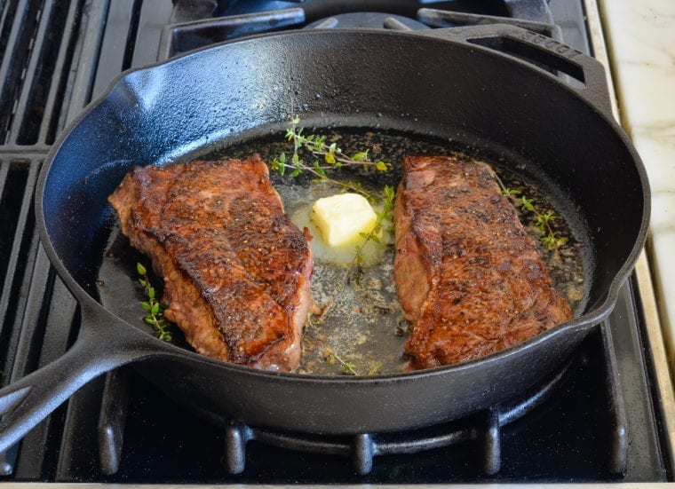

Pan Seared Ribeye

Description
Ever wonder why you can never get your steak to cook evenly on the grill? This recipe will show you that the cast iron pan is the superior cooking method!
By following this recipe, you'll never have to worry about an unevenly cooked steak again!
Ingredients
For this recipe, we're using a handpicked 1" thick ribeye from our local butcher. And aiming for the rare side of medium-rare
Feel free to use thisn recipe with any cut of steak, just know cookking times will vary
- 1 1" thick ribeye
- 2 Tbsp salted butter
- 2 fresh sprig rosemary
- Salt and fresh ground pepper to taste
Steps
- Start pre-heating your cast iron pan on the stove at medium-high
- Pat down your steak with paper towels
Reminder never wash your meat. This is unsanitary and unnecessary
- Liberally season both sides of the steak with salt and fresh ground pepper
- Once your pan is heated throw all of your butter in the pan
- After your butter is melted and simmering add your seasoned steak
Make sure not to move the steak around in the pan so you can get a pretty and even sear
- Cooking times will vary depending on your cook top and quality of pan.
I like to sear the first side of my steak for about 3-4 min. undisturbed.
- After the first 3-4 min. of searing, add your rosemary to the side of the pan and flip the steak
- While the last side of the steak is searing, continuously spoon butter over the top of the steak
Make sure not to move the steak around too much. Dont be afraid spooning the rosemary along with the butter
- After aprox. 3-4 min. check the tempurature of your steak with a meat thermometer. Pull once the temp reads 130 deg. fahrenheit.
- Let steak rest 5 min. Then cut and serve with your favorite sides